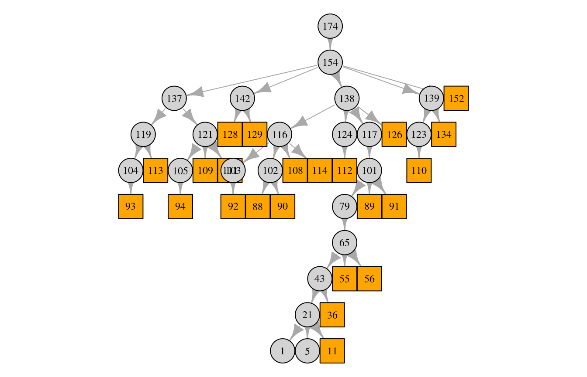
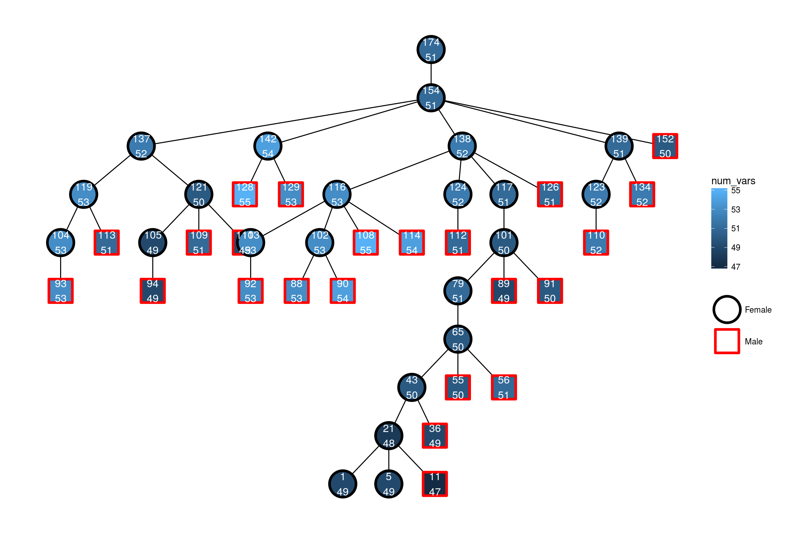
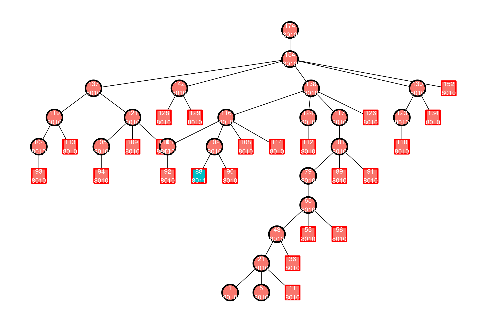

introduction.RmdFirst, the library is loaded:
library(mitolina)For reproducibility, the seed for the (pseudo) random number generator is set:
set.seed(1)In this vignette, I will use functionality from the dplyr (that loads the pipe operator from the magrittr package). More information about these are available at https://magrittr.tidyverse.org/ and http://dplyr.tidyverse.org/.
library(dplyr)A genealogy is simulated by specifying population sizes for females and males.
sim <- sample_mtdna_geneology_varying_size(
population_sizes_females = rep(10, 10),
population_sizes_males = c(0L, rep(10, 9)),
progress = FALSE)
pop <- sim$population
pop## Population with 178 individualsNote, that the first male generation must have size 0.
Please refer to the documentation of sample_mtdna_geneology_varying_size (?sample_mtdna_geneology_varying_size) for details in variability in reproductive success (VRS) (Andersen and Balding 2017).
This only sample a genealogy. We also need to build pedigrees:
peds <- build_pedigrees(pop, progress = FALSE)
peds## List of 8 pedigrees (of size 3, 3, 15, 5, 46, 94, ...)We can then plot one pedigree. We take a pedigree with a male individual in the final generation (end_generation_male_individuals):
end_gen_peds <- lapply(sim$end_generation_male_individuals, get_pedigree_from_individual)
pedids <- sapply(end_gen_peds, get_pedigree_id)
id_tab <- sort(table(pedids))
ped_id_endgen <- as.integer(names(id_tab)[1]) # smallest
indv_index <- which(pedids == ped_id_endgen)[1]
ped <- get_pedigree_from_individual(sim$end_generation_male_individuals[[indv_index]])
pedigree_size(ped)## [1] 46plot(ped)
The squares are males and the circles are females.
We are now ready to add haplotypes/mitogenomes to the individuals. Let us consider
sites <- 100in the mitogenome for know.
First, we construct a function to create founder haplotypes. Here, they are just random:
get_founder_mito <- function() {
sample(c(FALSE, TRUE), sites, replace = TRUE)
}
x <- get_founder_mito()
head(x)## [1] TRUE TRUE TRUE FALSE FALSE TRUEsum(x)## [1] 51Let us assume the following mutation rates per site:
mu <- rep(1e-2, sites)Now, we can add mitogenomes:
pedigrees_all_populate_haplotypes_custom_founders(
pedigrees = peds,
mutation_rates = mu,
get_founder_haplotype = get_founder_mito,
progress = FALSE)We can then try to plot the same pedigree again, this time with information about the individuals’ mitogenomes (namely, the number of variants in each individuals mitogenome):
plot(ped, num_vars = TRUE)Plotting with the igraph plot quickly becomes difficult to customise. Therefore extensions to the tidygraph/ggraph packages is provided:
library(tidygraph)
library(ggraph)## Loading required package: ggplot2g <- as_tbl_graph(peds) %>%
activate(nodes) %>%
filter(ped_id == ped_id_endgen) %>%
mutate(num_vars = sapply(haplotype, sum))
p <- ggraph(g, layout = 'tree') +
geom_edge_link() +
geom_node_point(aes(color = sex, fill = num_vars, shape = sex), size = 12, stroke = 2) +
geom_node_text(aes(label = paste0(name, "\n", num_vars)), size = 4, color = "white") +
theme_graph(base_family = "") +
scale_shape_manual(NULL, values = c("Female" = 21, "Male" = 22)) +
scale_color_manual(NULL, values = c("Female" = "black", "Male" = "red"))
p
Here, the top number is the id and the number below is the number of variants in the individual’s mitogenome. Note, how it is possible to get both a (border) color and fill for pch values 21-25.
We can also extract all haplotypes in this pedigree:
haps <- get_haplotypes_in_pedigree(ped)
length(haps)## [1] 46mean(sapply(haps, sum))## [1] 51.28261Or from the last male generation by
haps <- get_haplotypes_individuals(sim$end_generation_male_individuals)
length(haps)## [1] 10In the simulation function sample_mtdna_geneology_varying_size, there is a parameter generations_return to decide how many generations are returned in the male_individuals_generations and female_individuals_generations elements. The default is 3, meaning that individuals in 3 last generations are returned. So, with the default, the last three generations of males are available in the male_individuals_generations element.
haps <- get_haplotypes_individuals(sim$male_individuals_generations)
length(haps)## [1] 30There are several datasets with information about the mitogenome included. There is a help file to each of the datasets which can be found by e.g. ?mtdna_partitions for the mtdna_partitions dataset.
First, there is information about the positions from PhyloTree http://www.phylotree.org/resources/rCRS_annotated.htm about the revised Cambridge Reference Sequence (rCRS) (Andrews et al. 1999):
data(mtdna_partitions)
mtdna_partitions %>% print(n = 2)## # A tibble: 16,569 x 5
## Position rCRS PartitionPhyloTree PartitionRieux PartitionSoares
## <int> <chr> <chr> <chr> <chr>
## 1 1 G Control_region [Not included?] CR: Remaining
## 2 2 A Control_region [Not included?] CR: Remaining
## # ... with 1.657e+04 more rowsThere is also mutation information from (Soares et al. 2009):
data(mtdna_mut_SoaresK8)
mtdna_mut_SoaresK8## # A tibble: 8 x 4
## PartitionSoares MutRateYearly MutRateSEYearly MutationScheme
## <chr> <dbl> <dbl> <chr>
## 1 PC1 + PC2 0.00000000888 0.000000000755 Soares 2009 (K = 8)
## 2 PC3 0.0000000193 0.000000000755 Soares 2009 (K = 8)
## 3 CR: HVS1 0.000000164 0.000000000755 Soares 2009 (K = 8)
## 4 CR: HVS2 0.000000230 0.000000000755 Soares 2009 (K = 8)
## 5 CR: Remaining 0.0000000155 0.000000000755 Soares 2009 (K = 8)
## 6 rRNA 0.00000000820 0.000000000755 Soares 2009 (K = 8)
## 7 tRNA 0.00000000691 0.000000000755 Soares 2009 (K = 8)
## 8 Others 0.0000000249 0.000000000755 Soares 2009 (K = 8)From (Rieux et al. 2014)
data(mtdna_mut_RieuxK4)
mtdna_mut_RieuxK4## # A tibble: 5 x 6
## PartitionRieux MutRateYearly MutHPDLower MutHPDUpper MutRateSEYearly
## <chr> <dbl> <dbl> <dbl> <dbl>
## 1 PC1 + PC2 0.00000000756 0.00000000571 9.35e-9 0.000000000929
## 2 PC3 0.0000000332 0.0000000257 4.07e-8 0.00000000384
## 3 HVS1 + HVS2 0.000000314 0.000000226 4.03e-7 0.0000000453
## 4 rRNA + tRNA 0.0000000101 0.00000000757 1.27e-8 0.00000000130
## 5 [Not included?] 0 0 0. 0
## # ... with 1 more variable: MutationScheme <chr>data(mtdna_mut_RieuxK1)
mtdna_mut_RieuxK1## # A tibble: 1 x 5
## MutRateYearly MutHPDLower MutHPDUpper MutRateSEYearly MutationScheme
## <dbl> <dbl> <dbl> <dbl> <chr>
## 1 0.0000000214 0.0000000158 0.0000000271 0.00000000287 Rieux 2014 (K =…And from (Översti et al. 2017):
data(mtdna_mut_OverstiK4)
mtdna_mut_OverstiK4## # A tibble: 5 x 6
## PartitionRieux MutRateYearly MutHPDLower MutHPDUpper MutRateSEYearly
## <chr> <dbl> <dbl> <dbl> <dbl>
## 1 PC1 + PC2 0.000000018 0.0000000117 0.000000024 0.00000000314
## 2 PC3 0.0000000304 0.0000000192 0.0000000421 0.00000000584
## 3 HVS1 + HVS2 0.000000206 0.000000125 0.000000290 0.0000000421
## 4 rRNA + tRNA 0.0000000158 0.0000000094 0.0000000230 0.00000000347
## 5 [Not included?] 0 0 0 0
## # ... with 1 more variable: MutationScheme <chr>All these are assembled info one dataframe:
data(mtdna_mut_schemes)
mtdna_mut_schemes %>% print(n = 2)## # A tibble: 66,276 x 4
## Position MutationScheme MutRateYearly MutRateSEYearly
## <int> <chr> <dbl> <dbl>
## 1 1 Soares 2009 (K = 8) 0.0000000155 0.000000000755
## 2 2 Soares 2009 (K = 8) 0.0000000155 0.000000000755
## # ... with 6.627e+04 more rowsmtdna_mut_schemes %>% count(MutationScheme)## # A tibble: 4 x 2
## MutationScheme n
## <chr> <int>
## 1 Oversti 2017 (K = 4) 16569
## 2 Rieux 2014 (K = 1) 16569
## 3 Rieux 2014 (K = 4) 16569
## 4 Soares 2009 (K = 8) 16569This makes it easier to use the mutation rates from for example mtdna_mut_RieuxK4:
d_mu <- mtdna_mut_schemes %>%
filter(MutationScheme == "Rieux 2014 (K = 4)", MutRateYearly > 0)
mu_mean_year <- d_mu %>% pull(MutRateYearly)
mu_mean_gen <- 25*mu_mean_yearNow, mu_mean_gen contains a mutation rate per generation (of 25 years) for each of the 16033 sites. The probability of one ore more mutations in a single meiosis is then
1 - prod(1 - mu_mean_gen)## [1] 0.01083419Note, that to include variability in the mutation rates, it is probably best to sample a rate per region (in mtdna_mut_RieuxK4), and then distribute that to all sites in the partition.
These rates are easily used to populate mitogenomes:
get_founder_mito <- function() {
sample(c(FALSE, TRUE), length(mu_mean_gen), replace = TRUE)
}
pedigrees_all_populate_haplotypes_custom_founders(
pedigrees = peds,
mutation_rates = mu_mean_gen,
get_founder_haplotype = get_founder_mito,
progress = FALSE)Number of variants in the last three male generations (not just in the one pedigree, but in entire population):
haps <- get_haplotypes_individuals(sim$male_individuals_generations)
table(sapply(haps, sum))##
## 7944 7945 8010
## 25 1 4Number of variants in the last male generation (not just in the one pedigree, but in entire population):
haps <- get_haplotypes_individuals(sim$end_generation_male_individuals)
table(sapply(haps, sum))##
## 7944 8010
## 9 1And the same pedigree with new mitogenomes, now where number of variants is a factor to get a discrete fill colour scale:
g <- as_tbl_graph(peds) %>%
activate(nodes) %>%
filter(ped_id == ped_id_endgen) %>%
mutate(num_vars = sapply(haplotype, sum))
p <- ggraph(g, layout = 'tree') +
geom_edge_link() +
geom_node_point(aes(color = sex, fill = factor(num_vars), shape = sex), size = 12, stroke = 2, show.legend = FALSE) +
geom_node_text(aes(label = paste0(name, "\n", num_vars)), size = 4, color = "white") +
theme_graph(base_family = "") +
scale_shape_manual(NULL, values = c("Female" = 21, "Male" = 22)) +
scale_color_manual(NULL, values = c("Female" = "black", "Male" = "red"))
p
Andersen, MM, and DJ Balding. 2017. “How convincing is a matching Y-chromosome profile?” PLOS Genetics 13 (11): e1007028.
Andrews, Richard M, Iwona Kubacka, Patrick F Chinnery, Robert N Lightowlers, Douglass M Turnbull, and Neil Howell. 1999. “Reanalysis and revision of the Cambridge reference sequence for human mitochondrial DNA.” Nature Genetics 23.
Översti, Sanni, Päivi Onkamo, Monika Stoljarova, Bruce Budowle, Antti Sajantila, and Jukka U. Palo. 2017. “Identification and analysis of mtDNA genomes attributed to Finns reveal long-stagnant demographic trends obscured in the total diversity.” Scientific Reports 7.
Rieux, Adrien, Anders Eriksson, Mingkun Li, Benjamin Sobkowiak, Lucy A. Weinert, Vera Warmuth, Andres Ruiz-Linares, Andrea Manica, and François Balloux. 2014. “Improved Calibration of the Human Mitochondrial Clock Using Ancient Genomes.” Molecular Biology and Evolution 31 (10): 2780–92.
Soares, Pedro, Luca Ermini, Noel Thomson, Maru Mormina, Teresa Rito, Arne Röhl, Antonio Salas, Stephen Oppenheimer, Vincent Macaulay, and Martin B Richards. 2009. “Correcting for Purifying Selection: An Improved Human Mitochondrial Molecular Clock.” American Journal of Human Genetics 84: 740–59.